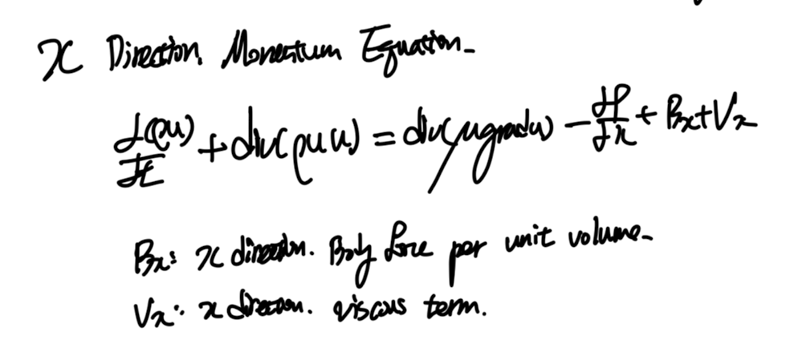
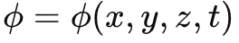
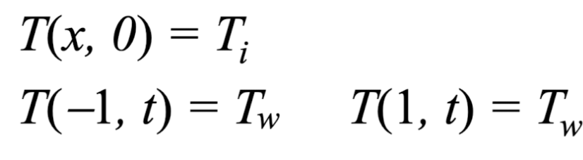
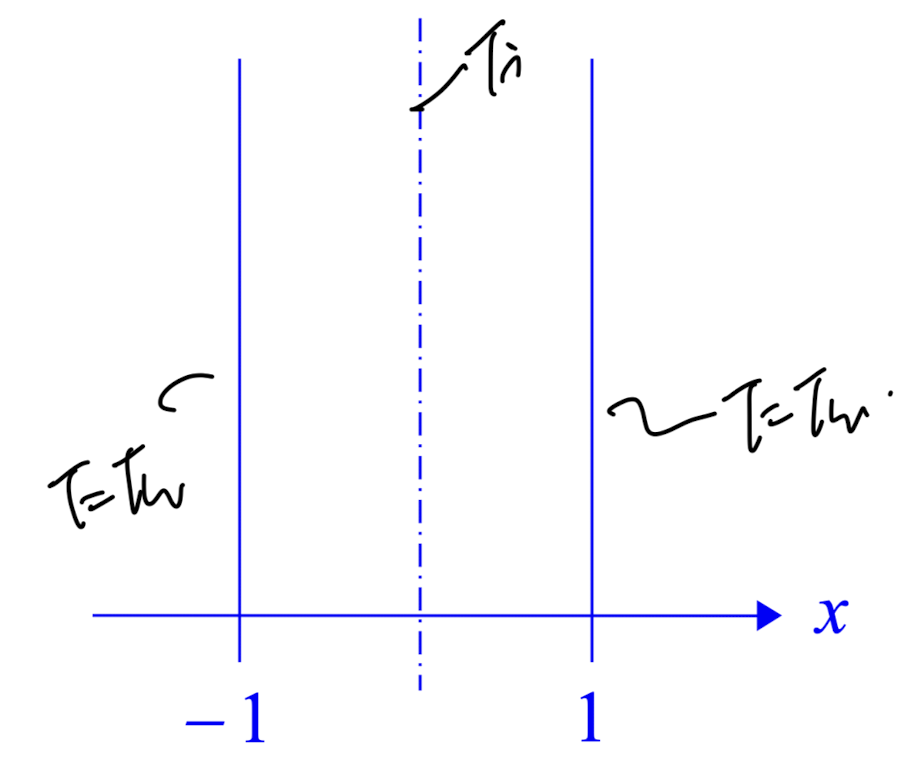
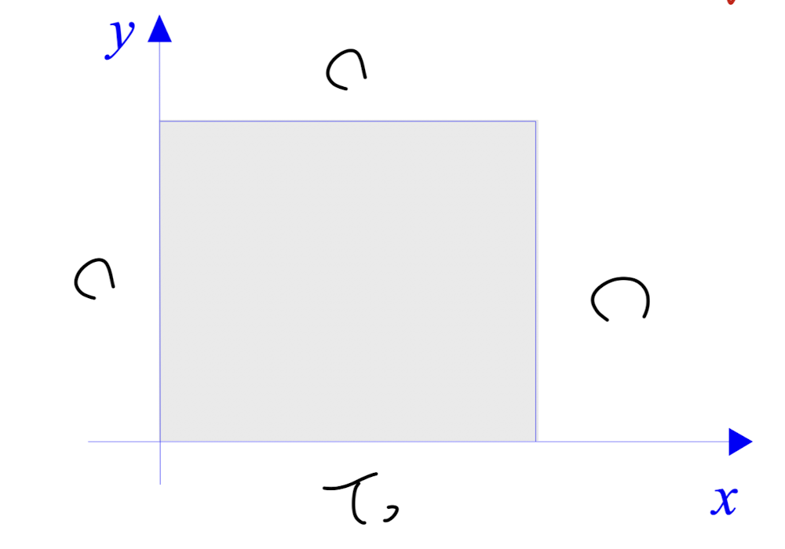
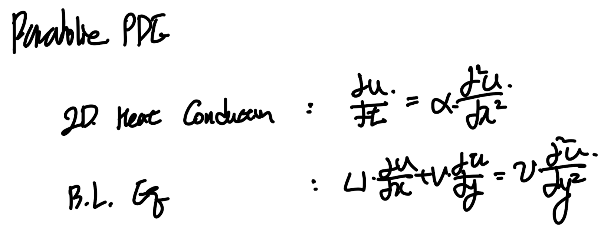

Ch2 Mathematical description of Physical Phenomena
지난 포스터 intro에서 언급 했다 싶이,
맨 처음 시작은 수학식으로 표현된 물리 법칙이다.
-> Differential Equations
여기서 말하는 물리법칙이란 '
보존 법칙
'이다.
질량보존, 운동량 보존, 에너지 보존, transport eq..등을
식으로 나타낸 것이다.
(자세한 유도과정들은 유체역학, 열역학 카테고리에서)
해당 식들은 아주 작은 미소부피 단위에서 항상 유도되었다.

infinitismal unit volume

일반적으로 식을 세웠던 방식. 결국, Reynodls transport Theroem
아마 무조건 배웠던 식들을 다시한번 써보자.

continuity eq - mass conservation

x방향 linear momentum balance eq.

steady state, ideal gas, c(constant specific heat coefficient) assumption Energy balance equation.

Conservation of Chemical Species.
위 식들은 결국 tranport Eq. conservation Eq이기 때문에
종합적으로 밑의 형태로 일반화 시킬 수 있다.

우리가 구하고 싶은 함수는 x,y,z,t 시공간에 따른 스칼라 함수 혹은 벡터함수.

여기서 한발짝 더 나아가서,
여기서 일반화 시킨
partial differentia eq
의 종류를 구분 지을 필요가 있다.
종류를 나누어보고, 왜 구분 짓는지 그 본질을 이해해보자.

이렇게 쉽게 생각해보자.
어떤 위치 A, 그리고 그 왼쪽에 B, 오른쪽에 C가 있다고 가정하자.
만약에,
B에서 값을 바꾸었더니 -> A의 해가 변한다
C에서 값을 바꾸었더니 -> A의 해가 변한다.
즉 A의 해는 좌우 모두에 영향을 받는다.
따라서 점 A의 해는 Two way coordinate
반대로,
B에서 값을 바꾸었더니 -> A의 해가 변한다
C에서 값을 바꾸었더니 -> A의 해가 변하지 않는다.
즉 A는 B방향으로부터만 영향을 받기 때문에,
One way coordinate라고 할 수 있다.
(생각보다 간단하다)
한번만 더 생각해보자.
유체가 흐르는데, convection즉 흐르는 방향이 명확하고,
한방향으로 강한 관성력을 가지고 흐른다면?
흐르는 그 강력한 방향으로만 해가 변할 것이다.
반대로 diffusion즉 퍼져나가는 분산이 강하다면,
당연히 주변의 모든해가 영향을 줄것이다.

여기서 우리는 풀어야하는 방정식의 해가 공간 안에서 one way, two way인지에 따라서
방정식의 종류를 구분짓는다.
parabolic -> one way,
elliptic -> two way이다.

이와 별개로 잡종으로
hyperbolic
이라는 종류도 존재한다.
one way behavior 즉,
해가
어떠한 선
을 따라서 변한다면(선이 1개가 아니여도 됨)
그선을
characteristic
이라고 칭하고,
hyperbolic partial differential eq이라고 부른다.

주의사사항: parabolic, elliptic은 해가 시공간에 따라서 변함, 하지만 hyperbolic에서 발하는 해가 변하는 방향성은 시공간이 아닌 별개의 special line(characteristic이다)
기존의 hyperbolic문제를 parabolic으로 전환시켜 줄 수도 있다.
(d^2 u/dx^2 ~ 0)

x방향으로만 해가 전파되므로 parabolic.
말로 정의를 하는 것보다 직접 함수식을 보면서,
어떤게 parabolic, elliptic 그리고 hyperbolic인지를 살펴보자.

2nd order PDE

구분 짓는 수학적 기준.
1. Parabolic - 1D transient heat conductance.


inital conditon and boundary conditons
위 식의 b^2-4ac < 0 임을 쉽게 알 수 있고,
해가 시간이 증가하는 방향으로 전파된다.
따라서 parabolic.

시간에 따라 해가 변하며, 미래의 해가 현재에 영향을 주지 않는다
2. Ellitpic - Laplace Equation

2D steady heat conduction, b^2 - 4ac = 0
4방향으로 온도를 고정하는 boundary condition을 부여하자.

저 사각형 안에 있는 영역의 해는
x,-x, y, -y모든 방향에 있는 boundary conditoin으로 부터
영향을 받는다.
-> two way , ellipitic
3. Hyperbolic - Transient Wave equation.


intial condition of the PDE.
위 식의 해를 구하게 되면, 아주 신기하게
두 characteristic방향으로 해가 전파 됨을 알 수 있다.

(즉 저 선 밖에 있는 영역으로는 해가 전파되지 않는 것)
해가 전파되는 영역을
'Zone of Influence' 라고 부른다.
각 종류별 2개의 예시들.



마지막으로 각 종류별로 Zone of influence(domain of influence)를 보고, 개념을 정리하자.
Domain of influence안에 있는 해가 바로 P(x,t) 현재 해에 영향을 준것이다.

즉, parabolic은 이전시간의 해만 현재의 해에 영향을 주었으니,
시간에 따라 해가 변함을 알 수 있다.(시간이 증가하는 방향)
3번째 ellpitic은 모든 방향으로 해가 변한다.
현재해에 영향을 주는 다른 해는 모든 방향이다.
첫번째로 hyperbolic은 현재해 P(x,t)에 영향을 주는 공간은
characteristic line으로 구분이 된다.
(시공간과 별개의 구분선임을 알 수 있다)